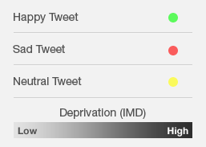

Moodmap is an online application which correlates data from Twitter with data from the government. Tweets are put through sentiment analysis (to assess the overall mood) and then plotted on a map according to the location from which they were tweeted from. Goverment data for deprivation is then overlayed on top of this.
Created by Priyesh Patel & Daniel Saul.

Toggle Tweets:
Toggle Government Data: